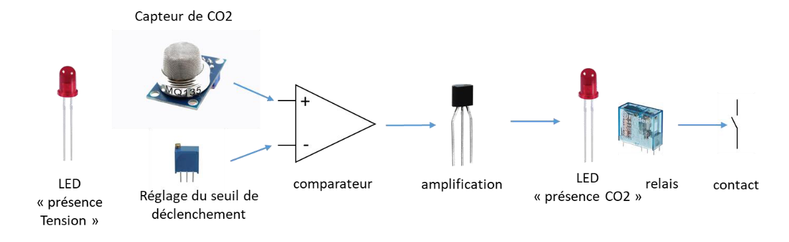
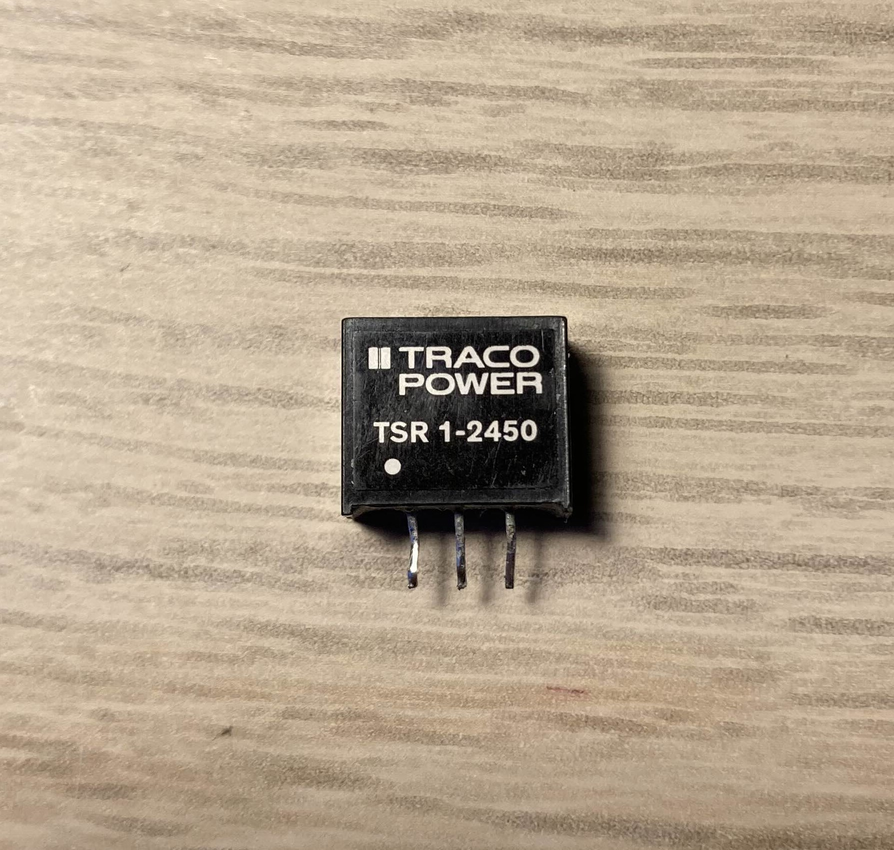
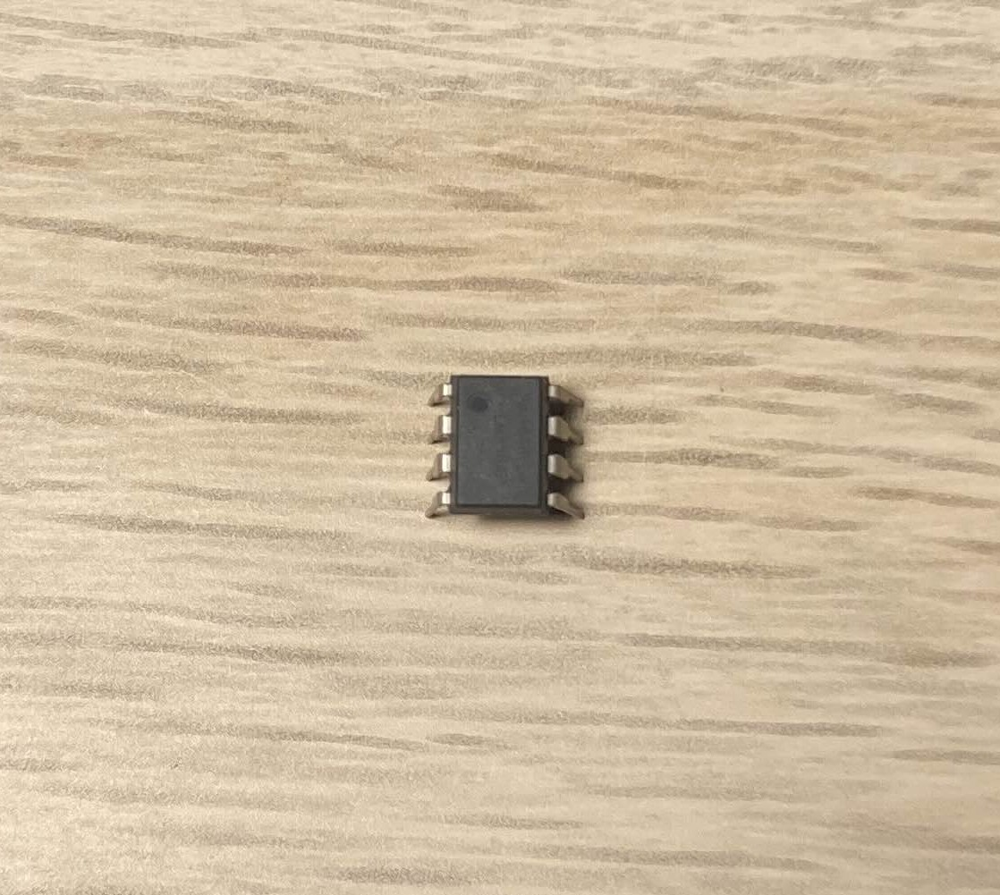
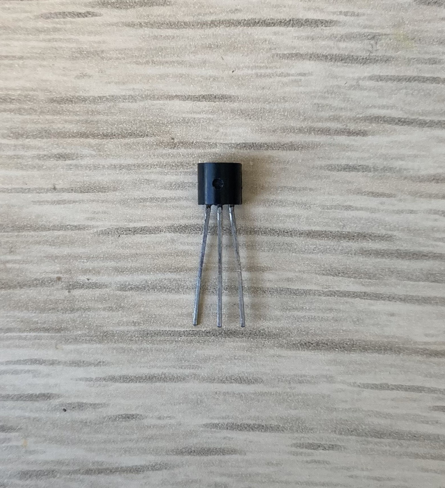

TP capteur de CO2#
L’objectif de ce tp est de créer un capteur de co2 qui ce déclanche à partir d’un seuil donné.
Voici le fonctionnement du capteur (d’après les consignes):
- Un capteur de CO2 donnera une tension qui dépend du taux de CO2 dans l’air
- Cette tension sera alors comparée avec un seuil réglé par un potentiomètre.
- Quand le taux de CO2 sera supérieur au seuil, le comparateur donnera une tension positive
- Cette tension sera amplifiée par un transistor qui alimentera un relais
- Le contact du relais sera utilisé pour indiquer que le seuil de détection est atteint.
- Des leds serviront à visualiser la présence de la tension d’alimentation et l’état du capteur.
- Un régulateur de tension sera utilisé pour maintenir la tension d’alimentation à 5 V.
 source : pdf consigne du tp
1. Led présence de tension#
Pour ce faire, nous commençons par ajouter un régulateur de tension 5V.
-
 source : personnelle
-
Ce composant e trois broches :
- la première pour le +
- la deuxième pour le -
- la troisième pour la sortie de la tension ainsi régulé.
En sortie on ajoute une résistance et une led afin de signifié que le courant passe bien.
2. Capteur#
-
On alimente le capteur avec la sortie du regulateur (borne vcc) sans oublier de relier la borne negative de ce dernier avec celle du circuit.
-
 source : personnelle
source : personnelle
La sortie du capteur est celle de la broche A0. C’est unne tension qui dépend du niveau de co2.
3. Seuil de déclanchement#
Afin de modulé un seuil de déclanchement nous allons utilisé un potentiomètre, ce qui correspond à une resistance variable.
-
 source : personnelle
source : personnelle -
Comme les autres composant utilisé, un potentiomètre possède trois patte : +, sortie et -.
Le seuil de déclanchemant choisi sera alors une tension. Lorsque la sortie du détecteur atteint cette tention nous voulons le déclanchement du système.
4. Comparateur#
Nous allons utilisé un amplificateur opérationnel du nom de LM 358 pour comparer ces deux tentions.
-
il y a 8 broches :
- 2 pour + et -
- 3 * 2 pour deux comparateurs (deux entrée et une sortie)
-
 source : personnelle
5. Amplification#
Nous allons utilisé un transistor NPN le BC237B pour amplifier le signal vers le relais.
-
 source : personnelle
-
il y a 3 broches :
- Emeteur
- Base
- Collecteur
6. Relais#
Un relais permet de fermé un circuit independant.
-
il y a 5 broches :
- 2 pour l’entré et sortie du permier circuit
- 3 pour l’entré et deux sorties du second circuit
-
 source : personnelle
source : personnelle